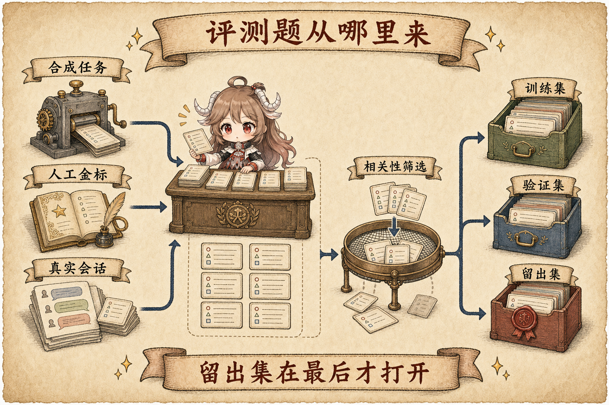
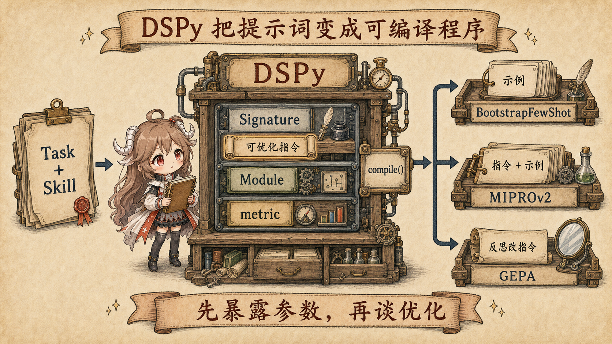
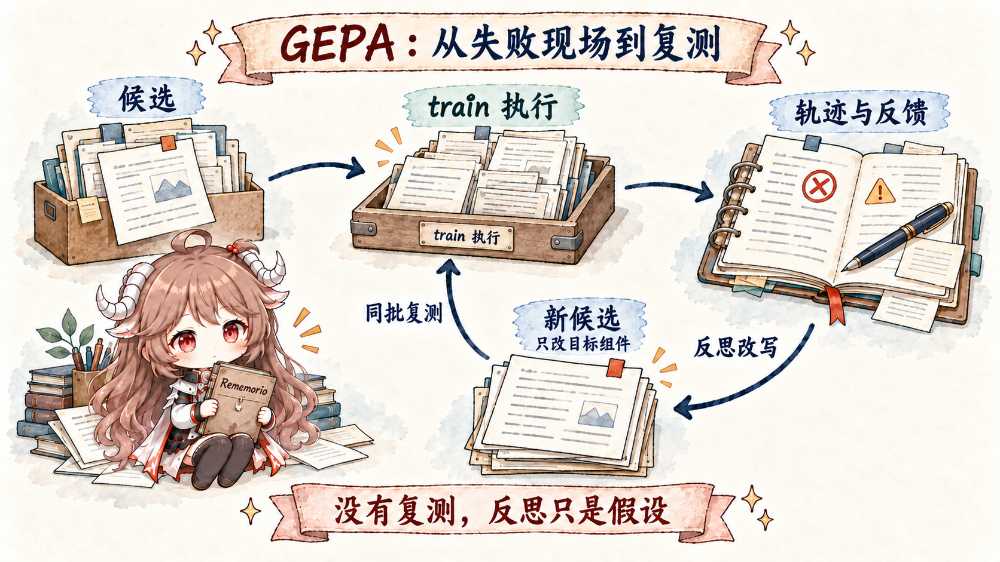
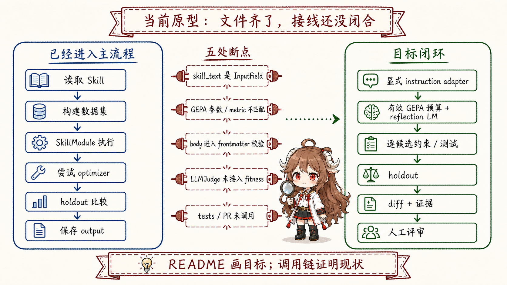

继续上一篇的场景。这里的 Skill 可以先理解成一份可版本化的任务说明书：它告诉 agent 遇到某类工作时按什么步骤做、检查什么、 哪些错误不能犯。它通常是一份可以阅读和修改的文字文件，改变的是 agent 做事时参考的流程，不需要重新训练模型权重。
Agent 修完一次测试失败，交付后的后台复盘发现“这个仓库必须先运行生成器，再跑单测”，于是把这条流程写进 Skill。 下一次遇到类似任务，Agent 加载新版 Skill，顺利完成了工作。到这里，我们很容易说：它学会了。
但成功可能来自很多地方：第二个任务更简单，模型那次恰好选对了工具，环境已经被上一次修好，或者新版 Skill 只是写得更长，碰巧复述了题目里的关键词。 如果没有固定题目、统一评分和未参与优化的留出样本，我们只能看到“这次成功”，不能知道“改写有效”。
这就是两篇文章的接缝。第一篇讨论的是运行时沉淀：当前任务结束后，什么值得进入 Memory 或 Skill； 这一篇讨论的是离线进化：拿到一个现有 Skill 后，怎样生成候选、复盘失败、比较版本，并把未经证明的变化挡在交付之外。 所谓“离线”，是指这场比较不占用正在服务用户的那一轮，而是在一组固定任务上单独运行。
阅读契约。 全文继续追踪同一份代码工作 Skill。读完后，你应该能复述：旧版怎样成为基线；一道评测题怎样产生分数、轨迹和反馈； 候选怎样反复生成和淘汰；为什么最后还要经过留出集与人工审阅；以及论文方法、框架接线和 Hermes 当前源码分别证明到哪里。
证据边界。本文会同时使用三层材料：方法论文解释“这种优化思路为什么可能有效”，官方框架源码解释“数据怎样在组件之间流动”， Hermes Agent Self-Evolution 的固定快照解释“当前仓库真正接通了什么”。小型实验只能证明那次配置下的结果，README 路线图也不能代替实际调用链。 具体链接会在相应机制已经讲清后出现。
先带着四个问题往下读：
- 如果一次成功不能证明 Skill 变好了，公平的比较要固定什么？
- 旧版从哪里出发，经过哪些步骤，才会成为可交付的新版？
- 程序封装、失败反思和候选搜索分别解决哪一段问题？
- 当前源码真正跑通了哪一步，哪些仍只是目标设计？
一、两只时钟解决的是两个不同问题
运行时沉淀发生得快。一个任务交付后，后台流程可以读取这一轮的消息和工具结果，判断某条偏好或流程是否值得保存； 更长周期的维护任务再整理技能库。第一篇把前者叫作 background review，把后者叫作 curator。它们的输入来自真实使用， 优点是贴近现场，风险是每段经历只有一个上下文，很难构成公平对照。
离线进化发生得慢。它先冻结一个基线版本，把同一批题交给不同候选，在训练与验证样本上寻找改进，只在最后打开留出集。 它牺牲即时性，换来可比较性。两只时钟通过 Skill 交接：运行时提供值得改进的对象和真实任务线索；离线流程提供“这个版本是否值得回到运行时”的证据。
| 问题 | 运行时沉淀 | 离线评测进化 |
|---|---|---|
| 主要输入 | 刚完成的对话、工具结果、用户偏好 | 冻结的 Skill、评测样本、执行轨迹 |
| 核心判断 | 什么值得留下？ | 哪次改写有可重复的改进？ |
| 时间尺度 | 一轮之后或空闲时 | 独立优化运行 |
| 主要风险 | 把偶然经历写成长期事实 | 过拟合评测、奖励错误代理指标 |
| 合理出口 | Memory / Skill 候选 | 可审阅的差异、指标和交付候选 |
所以“自进化”不是一个模型在后台不断重写自己。更可靠的理解是：一条快路径收集经验，一条慢路径验证改写；任何变化都要在明确的版本边界上交接。
二、先完成一次公平对比：评测究竟在比较什么
假设我们要改进一个代码审查 Skill。原版要求检查正确性、安全性和测试，但经常漏掉资源泄漏。离线进化不是直接让模型“把它写得更好”， 而是让旧版和新版面对同样的任务、接受同样的评分。先完整走一遍，后面的术语才有落脚点。
2.1 先把题目和“怎样才算做好”分开
第一步不是改 Skill，而是固定旧版。我们把当前 SKILL.md 复制成一个带版本号的基线，保证后面无论生成多少次改写，
都能回到同一个起点。论文和源码常把这种“正在被改的有版本对象”叫作 artifact。
接着准备一道题。题目本身只描述要做什么，评分说明则写清好结果不能漏掉什么。两者必须分开，否则模型可能靠题目里的提示猜到答案， 我们也无法判断它是真会审查，还是只会复述关键词。最小的一道评测题可以先写成人能直接读懂的样子：
任务：审查一段代码
条件：打开文件后可能提前 return
好结果：指出未关闭的文件句柄
并说明哪条路径会触发泄漏
这样的一组“任务 + 评分说明”叫作一个评测样本。Hermes 源码里的名字是 EvalExample，
评分说明放在 expected_behavior。它不是唯一标准答案，而是告诉评估器：一份合格结果必须做到什么。
2.2 再让旧版和新版走同一道题
现在让模型加载旧 Skill，完成这道审查题。假设它只讨论了异常处理，没有指出句柄泄漏。系统保存这次输出、执行过程、分数， 以及“遗漏了提前返回路径上的关闭动作”这句反馈。一次“拿某个版本实际做一道题”的执行叫作 rollout； 执行经过的步骤叫作 trace。分数说明结果有多差，trace 和文字反馈说明差在什么地方。
优化器根据这个失败现场写出一版新 Skill，例如补上“检查资源获得后的所有退出路径”。这份改写还不是升级，只是一个 候选版本。它必须重新做同一道题，并和旧版使用同一个评分规则。只有这样，分数变化才更可能来自 Skill， 而不是来自题目难度、运行方式或评分口径悄悄改变。
2.3 最后用它从未见过的题检查
新版在刚才那道题上成功，仍然不能直接交付。它可能只是记住了“文件句柄”这个例子。于是我们预先留出另一道资源管理题， 搜索过程中从不展示给优化器，只在候选确定后打开。如果新版也能发现数据库连接在异常路径上没有释放，我们才多了一份证据： 它学到的是“检查所有资源退出路径”这条规则，而不是背下一道题。
这组最后才打开的题叫作 holdout（留出集）。到这里，一次公平对比已经完整发生：固定旧版，固定题目和评分， 保存旧版失败现场，生成候选，用同样方式重跑，最后再用未见过的题验收。下面的表只是把刚才出现的六个名字压缩成速查。
| 常用名 | 刚才流程中的位置 | 不能和什么混淆 |
|---|---|---|
| Artifact | 冻结的旧 SKILL.md | 不是某一次模型输出 |
| Eval example | 审查任务与独立的评分说明 | 题目不是标准答案 |
| Rollout | 某个 Skill 实际完成某道题的一次运行 | 不是只把提示词送去打分 |
| Trace + feedback | 运行步骤、输出、分数和失败原因 | 总分不能代替失败现场 |
| Candidate | 等待比较的一版 Skill 改写 | 候选不等于已交付版本 |
| Holdout | 搜索期间从未展示的验收题 | 不能边看分数边继续修改 |
Hermes 仓库把单道题表示成 EvalExample，字段包括 task_input、expected_behavior、难度、类别和来源；
再由 EvalDataset 分成 train、validation 和 holdout。对应数据形状在
dataset_builder.py。
对开放式 Agent 任务，expected_behavior 比逐字匹配更合理；但它也把一个风险暴露得很清楚：
如果评分说明本身写错，优化器就会忠实地把 Skill 推向错误方向。开始优化之前，必须先检查尺子。
三、评测题从哪里来：先解决尺子，再启动优化

3.1 合成任务负责启动，不负责自动成为真理
没有历史数据时，仓库里的 SyntheticDatasetBuilder 会把完整 artifact 交给模型，要求生成任务、期望行为、难度和类别，再随机切成三份。
这条路径能快速启动一个新 Skill，源码在
SyntheticDatasetBuilder.generate。
它的盲点也很直接：出题模型读的是旧 Skill，容易把旧 Skill 已经写出的关注点再次包装成题目，却漏掉旧 Skill 根本没意识到的问题。 因此合成集适合做启动样本，不该独自承担最终证明。关键 Skill 仍需要人工金标或可自动核验的任务补足盲区。
3.2 真实会话提供分布，但不能把历史回答直接当答案
外部导入器会读取 Claude Code、Copilot 和 Hermes 的本地会话，先做便宜的关键词预筛，再由模型判断消息是否与目标 Skill 相关，并生成新的 expected behavior。
两阶段过滤在
RelevanceFilter，
三种来源汇总与切分在
build_dataset_from_external。
这意味着“真实会话”主要贡献真实任务分布，而不是把当时 assistant 的回答直接封成金标。历史回答会帮助相关性判断，但最终进入 EvalExample 的仍是任务与新生成的 rubric。
这个边界是对的：旧回答可能正是我们想修复的失败，不能因为它来自真实会话就自动变成标准答案。
3.3 留出集只回答一个问题：你学会的是规则，还是题目
训练集用于产生候选，验证集用于搜索期间比较候选，留出集只在候选确定之后做一次独立检查。 如果不断根据留出分数继续改 Skill，留出集就已经变成另一份验证集。可信的交付应该保留数据版本、切分种子和基线结果，让同一个候选不能反复偷看最终答案。
四、在理解 GEPA 之前，先看 DSPy 让什么变得可优化
现在我们已经有题目和尺子，却还缺一个关键接口：优化器究竟可以改哪里？如果程序只是把一整段提示词拼成字符串后直接发给模型， 评测器即使知道结果不好，也不知道哪段文字属于任务说明、哪段属于输入，更不知道怎样把改写后的版本重新装回原程序。
DSPy解决的正是这个中间问题。它不是某一种搜索算法，而是一套语言模型编程框架： 先声明输入、输出和任务说明，再把一次或多次模型调用组成模块，最后用统一的样本与指标调用优化器。这样，“写提示词”就变成了“编译一个有参数的程序”。

4.1 把刚才那次对比装进 DSPy
继续使用代码审查 Skill。我们希望程序接收待审代码，输出审查结果，同时允许优化器替换“应该怎样审查”这段说明。 要做到这一点，程序至少要把输入输出、调用方式、评测题和评分规则分开。DSPy 用四个对象承接这四项职责。
先用 Signature 声明这次语言调用的表格：输入栏是待审代码，输出栏是审查结果，instructions 写“检查正确性、安全性、测试和资源释放”。
如果我们要优化 Skill，这段 Skill 说明就必须被适配成可替换的 instructions，而不能只作为一段普通输入跟代码一起传进去。
再用 Module 决定怎样执行这张表格，例如交给 ChainOfThought 做一次预测。刚才那道资源泄漏题被装成
Example：代码进入输入栏，评分说明随样本保留。最后，metric 读取模型结果和评分说明，返回分数；
GEPA 这类需要反思的优化器还会拿到文字反馈。四样东西合在一起，优化器才既知道“可以改哪段说明”，又知道“改完怎样比较”。
当前 Skill
-> Signature.instructions
-> 允许替换的任务说明
评测题 -> Example
Module -> 运行一次代码审查
metric -> 给出分数与失败原因
compile -> 返回新程序现在再把四个源码名压缩成表格，就不需要靠表格猜它们之间的顺序了：
| 角色 | 在代码审查例子里是什么 | 接住哪项职责 |
|---|---|---|
Signature | 输入是代码，输出是审查结果，instructions 承载 Skill 说明 | 声明输入、输出与可替换说明 |
Module | 用 ChainOfThought 执行这份 Signature | 固定调用顺序与控制流程 |
Example | 一道代码审查题及其 rubric | 给编译器可重复的比较对象 |
metric | 检查漏检、误报与流程遵循 | 告诉优化器什么叫更好 |
其中最重要的边界是“什么会被优化”。DSPy 把任务说明放在 Signature.instructions 上；优化器沿着 Module 的 predictor 树寻找这些参数。
官方源码明确区分了 predictor 这类可发现的 Parameter 与普通 Python 属性：前者会进入优化器视野，后者不会自动进入。这个契约见
Signature instructions
和
Module 参数发现规则。
所以 compile() 不是“让模型自己变聪明”的魔法调用。它接收一个结构已经明确的 student program、训练样本和 metric，返回一份参数经过选择或改写的程序副本；
模型权重可以完全不变。后面审计 Hermes 时，我们也会沿着这条边界追问：Skill 正文到底是 predictor 的 instruction，还是一次普通输入？
4.2 三个优化器改变的不是同一件事
有了这个框架，我们就能按“想从失败中学到什么”选择办法。先看最简单的情况：旧 Skill 的说明基本正确，只是模型缺少可模仿的成功案例。
BootstrapFewShot 会运行训练题，把达到评分要求的执行轨迹留下来，作为 demonstrations 放回 predictor。它主要增加示例，不负责系统地重写整段任务说明。
如果示例和说明都可能有问题，可以再扩大搜索空间。MIPROv2 会提出多组 instruction 和 few-shot 候选，
然后用验证分数寻找更好的组合。它能同时调整“怎么说”和“给哪些示例”，代价是需要评测更多组合。
如果我们不仅知道分数低，还保存了“漏掉提前返回路径”这样的失败现场，就可以让 GEPA 读取 trace 和文字反馈，
先解释为什么失败，再重写 predictor instructions。三种方法都接收 DSPy 程序和评测集，但改变的东西与使用的学习信号不同。
下面的表是刚才三条路径的速查：
| 优化器 | 主要改变什么 | 它从评测中怎样学习 |
|---|---|---|
BootstrapFewShot | 挑选并加入 demonstrations | 保留达到 metric 要求的成功执行轨迹 |
MIPROv2 | 候选 instruction 与 demonstrations 的组合 | 提出多个候选，再用验证分数搜索组合 |
GEPA | predictor 的自然语言 instructions | 读取轨迹和文字反馈，反思失败后生成新候选 |
BootstrapFewShot 的官方实现把合格轨迹装进 predictor 的 demos；MIPROv2 同时提出 instruction 与 few-shot 候选并搜索组合，分别见
BootstrapFewShot
与
MIPROv2 候选生成。
GEPA 也会改 instruction，但它不只根据“哪个候选分高”做选择，而是让语言模型阅读失败现场后写出下一版。现在我们才有足够的铺垫理解它为什么不同。
五、GEPA 的关键不是“遗传”，而是带着失败原因改提示词
现在才轮到 GEPA。论文把目标写得很清楚：模型权重保持不变，搜索的是自然语言提示词。每轮从候选池里选一个父代，拿一小批样本执行，收集轨迹、分数和文字反馈， 再让反思模型解释失败原因并提出新的提示词。新候选经过评测后回到池里，循环继续。

5.1 轨迹让“错了”变成“错在哪里”
只有一个 0.4 分，反思模型不知道问题来自工具选择、顺序、遗漏约束，还是输出格式。执行轨迹把中间决策暴露出来；评估器再补充文字反馈， 例如“调用了正确工具，但在拿到空结果后没有执行备用搜索”。GEPA 的 reflective mutation 正是读取这类上下文后，针对失败模式重写提示词。 论文的算法与反馈接口见 GEPA v2 第 3 节。
5.2 为什么不永远选择总分第一
一个候选可能擅长安全审查，另一个擅长 API 兼容性，第三个在格式要求上最稳定。只保留平均分最高的版本，会过早丢掉这些局部强项。 GEPA 维护按样本表现形成的帕累托候选集合：先抽一道题，再从这道题上的强候选中选择父代。这样，仍有独特优势的候选可以继续繁殖，而不是被一个暂时的总冠军清空。
这也解释了论文名称里的 Pareto。它不是为了让术语更复杂，而是在有限 rollout 预算下保护搜索多样性。 论文消融实验显示，只从“当前最好”变异会弱于帕累托选择；但候选合并也不是永远有利，组件之间存在依赖时可能反而破坏组合。
六、先走完一次进化，再看框架怎样接线
到这里，我们已经分别认识了基线、评测样本、rollout、trace、候选、DSPy 和 GEPA。但零件都认识，不等于流程已经连起来。 先继续用那份代码审查 Skill，把“旧版怎样成为可交付新版”从头到尾走一遍；然后再看三个框架怎样为这条流程传递数据。
6.1 旧版怎样走到可交付候选
- 冻结起点。保存旧 Skill、模型配置、评测题来源和数据切分。后面即使产生很多候选，基线也不能跟着变化。
- 跑出基线。让旧版完成训练集和验证集里的任务，保存每题输出、执行轨迹、分数和文字反馈。现在系统知道旧版平均多好，也知道它具体错在哪里。
- 生成候选。优化器选择一个父候选，抽取一小批失败样本，让反思模型阅读 Skill、轨迹和反馈，再提出一版有明确针对性的改写。
- 重新执行。新版完成同样的题目。结构、长度或安全约束不合格就立即淘汰；合格版本才进入验证比较。
- 循环搜索。验证分数和逐题表现决定候选是否留在池里、下一轮从谁继续改。预算耗尽或提升停滞时，搜索停止。
- 只打开一次留出集。选定候选后，才让它和旧版面对搜索期间从未见过的题。没有稳定提升，就不进入交付。
- 交给人审阅。系统展示 Skill diff、基线与候选指标、失败样本和已知局限。人可以接受、拒绝或继续修改；运行中的 Skill 不会被优化器直接覆盖。
这条路线里有三个不同身份：旧版是比较基准，候选是尚未证明的实验品，交付版是通过留出比较和人工审阅后才获得的身份。 “生成了一份更顺眼的文字”只走到第三步，不等于完成自进化。
6.2 适配层把三种表示翻译给彼此
完整路线清楚后，框架接线就容易理解了。Hermes 手里的是一份 Skill 文件；DSPy 希望把任务包装成可重复调用的 program，并把可优化说明放在 predictor instructions； GEPA 看到的则是一组有名字的文字组件，以及“怎样执行组件、怎样返回逐题分数和轨迹”的接口。三者说的不是同一种数据形状，因此中间需要 adapter 做翻译。
GEPA 的
独立官方实现
把候选交给 adapter 执行，再收集逐题分数、轨迹和反思材料；它本身并不知道 DSPy 的 Signature 或 Hermes 的 SKILL.md。
dspy.GEPA 则负责 DSPy 这一侧的翻译：遍历 student program 的 predictors，把 pred.signature.instructions 组成初始候选，
运行模块并捕获 trace，最后把 GEPA 选出的文字装回新程序。对应实现见
dspy.GEPA.compile
和
GEPA adapter 契约。
适配层决定“到底改了什么”。
独立 GEPA 可以通过自定义 adapter 优化任意文字组件；但标准 dspy.GEPA 路径从 DSPy predictor instructions 读取种子候选。
如果 Skill 正文只作为普通输入传进 forward，它不会因为参加了同一次执行就自动成为可改写参数。
6.3 Hermes 入口怎样表达这条目标路线
Hermes Agent Self-Evolution 的 CLI 把目标流程写成十个阶段：找到 Skill、准备数据、检查基线、配置 DSPy、运行 GEPA、取出新版、检查约束、比较留出集、展示结果、保存输出。
主入口在
evolve_skill.py。
为了让同一份 Skill 可以反复做同一道题，仓库用 SkillModule 把它包成 DSPy 模块：每次 forward 把 Skill 正文和任务输入交给
ChainOfThought，再返回模型输出。换句话说，它把“某个 Skill 做某道题”变成一项可以重复运行、评分和比较的函数。实现见
SkillModule。
| 理想阶段 | 必须留下的证据 | 失败时应该怎样 |
|---|---|---|
| 冻结基线 | 原始 Skill、源码版本、模型配置 | 不能悄悄换基线继续比较 |
| 准备评测 | 题目来源、rubric、切分和种子 | 题目质量不足就停止优化 |
| 反思变异 | 父候选、样本、轨迹、反馈、新候选 | 可定位哪次变异导致退化 |
| 候选门控 | 结构、长度、测试、基准结果 | 任一硬约束失败就淘汰 |
| 留出比较 | 基线与候选在同一未见集合上的结果 | 无提升就不交付 |
| 人工交付 | diff、指标、已知局限、可回滚版本 | 不直接覆盖运行中 Skill |
这张表把 6.1 的完整路线压缩成源码审计标尺。一个仓库可以同时拥有所有模块文件，却还没有把它们接成这条证据链； 判断“实现了没有”，要看值是否真的从入口流到门控和交付，而不是只看类名是否存在。
七、当前源码走到哪里：原型已经成形，闭环还没有

先说已经具备的部分：仓库能发现和解析 Skill，能生成或导入评测数据，能构造 DSPy 模块，能调用优化器，能在留出集上比较基线与候选，也能保存指标与前后版本。 这些不是空白路线图，而是一套有单元测试覆盖的数据和编排骨架。
但在固定快照 0a929e3 上，几处关键接线决定了它还不能被称为完整交付闭环：
7.1 被优化的 Skill 文本还没有明确注册为 GEPA 参数
SkillModule 把正文保存在普通 Python 属性 self.skill_text，forward 时再把它作为 skill_instructions 输入字段传给 predictor。
主流程却假设 optimized_module.skill_text 已经装着 GEPA 改写后的正文。当前源码没有展示把这个普通属性注册为 DSPy 可优化提示词参数的桥接，
因此仅凭这条调用链，不能确认 GEPA 会改写 Skill 本身，而不是只优化 predictor 内部提示。
7.2 最低依赖版本下，GEPA 的构造参数也对不上
仓库声明的依赖是 dspy>=3.0.0，没有锁定上限；主流程却调用
dspy.GEPA(metric=skill_fitness_metric, max_steps=iterations)。问题不只是新版 API 漂移：DSPy 3.0.0 的 GEPA 已经没有 max_steps，
而是要求在 auto、max_full_evals、max_metric_calls 中选择一个预算，并显式提供 reflection_lm。
对照
Hermes 依赖声明、
实际调用
和
DSPy 3.0.0 构造接口即可确认。
另外，Hermes 的 metric 只接受三个参数，而 DSPy 3.0.0 在为单个 predictor 生成反馈时会传入
gold、pred、完整 trace、predictor 名称和 predictor 子轨迹五项。
配置中的 optimizer_model 虽然被打印出来，也没有作为 reflection LM 交给 GEPA。
因此按仓库自己的最低依赖版本，这条 GEPA 路径会在真正开始反思之前失败；宽泛异常捕获随后把运行切到 MIPROv2。
7.3 结构校验拿到的是正文，却要求它带 frontmatter
load_skill 已经把 frontmatter 与 body 分开。主流程把 skill["body"] 和 evolved_body 送入 validate_all；
但 _check_skill_structure 又要求输入以 --- 开头，并在前 500 字符里包含 name: 与 description:。
对当前调用来说，这个条件天然失败。相关检查在
validate_all
与
_check_skill_structure。
7.4 丰富的 LLM Judge 存在，但优化器实际拿到的是关键词重合度
fitness.py 定义了 correctness、procedure following、conciseness 和文字反馈组成的 LLMJudge；这正接近 GEPA 需要的可解释反馈。
可是传入 dspy.GEPA(metric=...) 的 skill_fitness_metric 只计算 expected behavior 与输出的单词重合比例，并返回一个浮点数。
两条路径见
LLMJudge
和
skill_fitness_metric。
关键词代理指标速度快，却会奖励“重复 rubric 里的词”，不一定奖励正确完成任务；同时，丰富的失败原因没有通过这条 metric 返回给优化器。 这不是调权重能解决的小问题，而是当前搜索目标与论文方法之间的接口差异。
7.5 测试门、逐候选约束和 PR 交付仍是断开的
ConstraintValidator 有 run_test_suite，配置也有 run_pytest 与 create_pr；但主流程没有调用测试函数，也没有创建 PR。
约束只在优化完成后检查最终提取出的正文，并没有进入 GEPA 的每个候选评测。成功路径最终只是把文件与 metrics.json 写进 output/。
测试函数可见于
run_test_suite，
输出路径则在
保存阶段。
7.6 异常回退会把“GEPA 不可用”和“GEPA 执行失败”混在一起
主流程用一个宽泛的 except Exception 捕获 GEPA compile 的任何错误，然后回退到 MIPROv2。
这能提高演示时的可运行性，却可能把真正的接线错误伪装成“当前 DSPy 版本没有 GEPA”。严谨的进化运行应该只对已知能力缺失回退，其余异常保留失败现场。
这不是说仓库没有价值。 数据导入、样本结构、Skill 包装、留出比较和约束类都提供了可继续建设的骨架。准确的状态描述应是：Phase 1 原型已出现，端到端的 GEPA Skill 改写、硬门控和人工交付尚未由当前调用链证明。
八、怎样读“提升 39.5%”：先问实验真正改了什么
仓库的 Phase 1 报告记录了一次 arxiv Skill 实验：使用 MiniMax M2.5、7 个合成样本中的 3 个训练样本与 2 个验证样本，优化器是 DSPy BootstrapFewShot，
评分是关键词重合度。第一个验证样本从 0.408 到 0.569，报告为 +39.5%；第二个从 0.374 到 0.374，平均从 0.391 到 0.472，即 +20.7%。
配置、指标和结果写在
generate_report.py。
这次实验不是 GEPA 实验，也没有重写 Skill。BootstrapFewShot 选择表现较好的执行轨迹作为 few-shot demonstrations，给模块增加示例。 因此它能支持的窄结论是：在一个很小的合成集合和代理指标上，DSPy 包装后的模块通过示例增强得到更高分。它不能证明 GEPA 已经接通，更不能证明改写后的 Hermes Skill 在真实任务上稳定提升。
| 证据 | 它实际测试了什么 | 不能外推成什么 |
|---|---|---|
| GEPA 论文 | 六类任务上的提示词进化方法与消融 | Hermes 集成已经获得同样收益 |
| Phase 1 报告 | 一个 Skill、极小合成集、BootstrapFewShot、关键词指标 | GEPA 已跑通或 Skill 正文已被改写 |
| 当前源码 | 数据、编排、比较和约束原型 | 测试、PR 与逐候选门控已经自动闭环 |
GEPA 论文自己的结果更强：在六项任务上，相比 GRPO 平均高约 6%、最高约 20%，并报告最多 35 倍更少的 rollout；相对 MIPROv2 平均也有超过 10% 的优势。 这些数字说明方法值得研究，但评价对象是论文基准，不是这份 Hermes 原型。把两个证据层级分开，反而能看清项目下一步真正需要补什么。
九、要把原型变成可信闭环，还缺哪几步
补齐路线不需要发明更多名词，只要让前面的证据链一环不漏地传下去：
- 固定 artifact。记录源仓库 commit、Skill 哈希、模型与数据配置，保证基线可重放。
- 把 Skill 正文变成真正可优化的提示词参数。用 DSPy 明确支持的 instruction / signature 机制接入，而不是依赖普通属性被隐式改写。
- 让 metric 返回正确目标。优先使用可执行检查；开放任务再用 rubric judge，并把可操作的文字反馈交给 GEPA。
- 每个候选先过硬约束。完整 frontmatter、长度增长、测试和缓存边界都应在候选进入池前检查。
- 把异常留在正确层。GEPA 失败就保留失败，不用另一个优化器掩盖；回退必须是显式运行模式。
- 最后只打开一次留出集。同时报告逐题结果、置信区间或重复运行，避免一个样本的百分比制造确定感。
- 交付是 diff，不是覆盖。输出候选、基线、指标、失败案例和 PR，让人决定是否进入 Hermes Agent。
- 回到运行时仍要等下一轮。通过评测的 Skill 在安全边界刷新，不能在当前会话中途改变稳定提示前缀。
做完这些，第一篇与第二篇才真正闭合：运行时从真实任务里发现值得沉淀的经验，离线流程把某个 Skill 当成有版本的 artifact 做实验， 人工批准后，新版本再在未来会话生效；新的失败继续成为下一轮评测线索，而不是当场改写自身。
十、结论：自进化不是不断重写，而是不断补强证据
回到开头的问题。Agent 把“先运行生成器”写进 Skill，并不等于它已经变好；只有当旧版和新版面对同一套独立任务，新版在正确指标上更稳定， 又没有破坏结构、测试和运行边界，这次改写才有资格被称为改进。
运行时负责发现经验；
评测集负责固定问题；
轨迹与反馈负责解释失败；
候选池负责保留多种强项；
约束与留出集负责阻止自我说服；
人工审阅负责决定是否交付。Hermes Agent 给出了第一只时钟：回答之后，经验怎样进入长期状态。GEPA 给出了第二只时钟的方法：在不训练模型权重的前提下，怎样让提示词候选经历执行、反思和选择。 Hermes Agent Self-Evolution 则把两者之间的工程接口摆到了桌面上。它当前最有价值的地方，不是宣告自进化已经完成，而是让我们能沿着源码准确看到下一段路。
参考源码与论文
- NousResearch/hermes-agent-self-evolution 固定源码快照
- 项目 README 与阶段状态
- Phase 1 目标、数据策略与完成门
- EvalExample、数据切分与合成生成
- 会话相关性过滤与外部数据集构建
- SkillModule
- Skill 进化主流程
- LLM Judge 与实际 fitness metric
- 约束与测试函数
- Phase 1 实验配置、结果与安全声明
- DSPy: Compiling Declarative Language Model Calls into Self-Improving Pipelines
- DSPy 官方实现固定快照
- DSPy 3.0.0 的 GEPA 构造接口
- GEPA: Reflective Prompt Evolution Can Outperform Reinforcement Learning
- GEPA v2 论文 PDF
- GEPA 官方实现固定快照